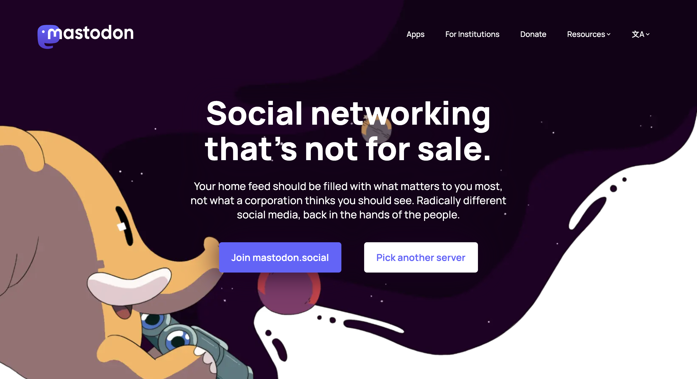
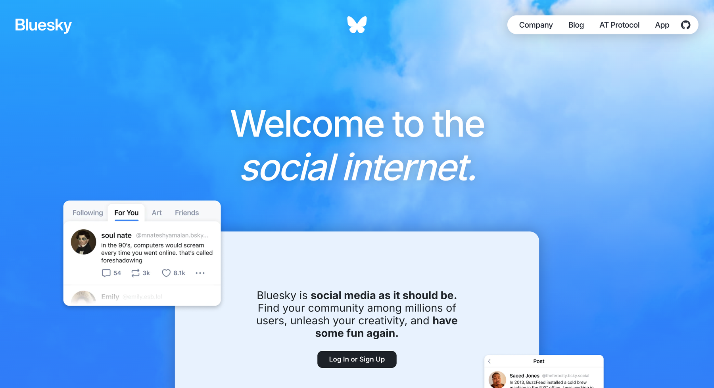
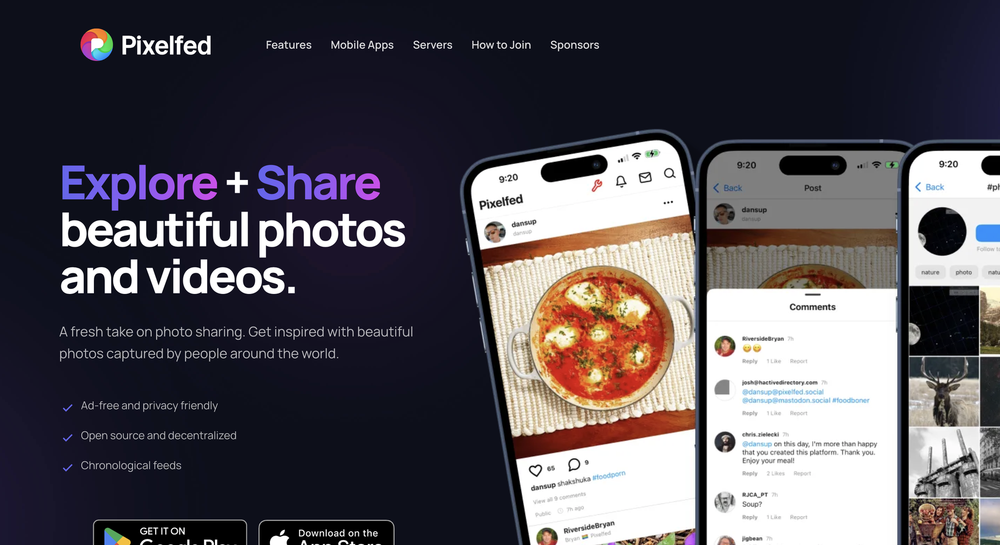

Optimizing a social media company's parent website

The nenos team needed a website that was engaging, inspiring, and better connected supporters to their work.
Nenos is a unique nonprofit—one of the few in the world developing an ethical social media network while focusing on digital literacy. nenos prioritizes community: lifting up small businesses, connecting users with local activities, and giving content creators an ethical platform to connect with their followers.
Their existing Squarespace site was rudimentary and lacked clear organization. This project focused on developing a new WordPress site that effectively tells nenos' story and makes it easy for visitors to donate or volunteer.
A redesigned WordPress site with clearer information architecture, accessible visuals, and integrated donation and volunteer flows.
Our team delivered core pages, migrated content from Squarespace, and built forms and donation flows that felt native to the new experience—all while meeting accessibility and SEO requirements.
The Landing page is now engaging and provides motivation and context for potential supporters.
The Volunteer page makes it much easier for potential applicants to learn more and apply.
The Board page provides more information about Nenos's team and values.
The Contact Us page provides multiple avenues to contact Nenos.
While deployment was not within our project scope, we received qualitative reviews and feedback from the nenos board of directors.
“This is a fantastic group of engaged and productive folks. They ask very thoughtful questions and the concepts they've produced have been great.”
“The new website looks fantastic, much more modern look and feel and easy to navigate!”
“The redesigned website presents a far more modern and elevated digital presence, with improved spacing, contemporary fonts, and streamlined navigation create a polished, professional feel while making content easier to digest. Overall, the updated experience strengthens credibility and engagement while positioning the organization for continued growth and broader outreach.”
But how did I get here?

Nenos is a 501(c)(3) nonprofit developing a social media network and focusing on digital literacy.

nenos prioritizes community by:
- lifting up small businesses,
- connecting users with local activities, and
- giving content creators an ethical platform to connect with their followers.
Their app, Bloom Social, is a creator-focused, ad-free social media platform.
Nenos needed a new website design that is engaging, inspiring, and connects potential supporters with their work.
As a team, we brainstormed the specific pages to redesign and broke each deliverable into smaller, actionable tasks. After defining our deliverables, we created a detailed project plan that outlined expected hours, start and end dates, success criteria, and engineer ownership for each task.
To manage progress and stay on schedule, we used a Jira board to track tasks and updated items weekly based on work completed by both designers and engineers.
The existing Squarespace site was rudimentary and lacked clear organization.
The previous site had too many moving parts, which made pages feel slow and harder to manage for goals like Google Ad Grants eligibility. The graphics and calls to action felt basic and promotional rather than intentional, and the overall experience did not feel fresh or inviting. The team wanted a full face makeover that modernized the site while making actions like volunteering and donating easier to find.
Landing Page
Volunteering Opportunities
Board Page

Contact Us
The client asked for a "sleek, modern" look, so I looked into potential designs.
We also analyzed other alternative social platforms like Pixelfed and Bluesky. However, these competitors primarily promoted their social media apps on landing pages—an approach nenos did not want to replicate, since they also needed room to highlight other ventures beyond the app itself.

Mastodon

Bluesky

Pixelfed
I used these references to compare visual style, hierarchy, and content structure before moving into ideation.

Before low-fidelity wireframes, we aligned on visual direction with three exploratory approaches.
We explored gradient-driven designs, a monochrome system emphasizing cohesion, and an organic, softer aesthetic to differentiate from bright, neon competitor palettes. After review—with supporting details such as organic blob assets—the client chose the organic visual style using their existing color palette, with selective gradient accents.
Over several weeks, we met with the client to review layouts, visual assets, and feedback.

Donations page

Landing page

Mission page
Before-and-after comparisons from Squarespace to the new WordPress direction.
The WordPress site was built with native WordPress features and custom code to achieve the desired aesthetic and functionality.
Front-end work covered the user interface through native WordPress features, including drag-and-drop and custom HTML/CSS blocks. Back-end work included migrating blog posts and managing the form database—stored natively in WordPress with WPForms for submissions and the native posts feature for blogs.
Technology stack
- WordPress Core — Content, navigation, and standard site features
- Custom HTML & CSS — Unique design elements beyond default capabilities, including wave backgrounds
- Design assets — Extracted from Figma to match approved specs
- Givebutter — Donation processing (third-party; data stored in Givebutter's external database)
- WPForms — Volunteer and contact forms; submissions stored in WordPress
As we approached the end of the project, we continued to share changes with the client and collaborated with engineers implementing the WordPress build.
Landing page
The landing page gives dedicated space for mission and vision with clear CTAs and testimonials—surfacing volunteer and donation paths without burying them behind a generic "Take Action" tab.
We also improved accessibility & visual consistency with a consistent color palette and WCAG-compliant contrast, plus indexability & SEO across major browsers and platforms.


Volunteers page
The payment page reimplemented the Givebutter plugin within WordPress with clearer donation CTAs. The volunteer page uses WPForms for sign-ups that feel native to the site, and the contact page routes topic-based selections to the appropriate teams.


Contact Us
The payment page reimplemented the Givebutter plugin within WordPress with clearer donation CTAs. The volunteer page uses WPForms for sign-ups that feel native to the site, and the contact page routes topic-based selections to the appropriate teams.
Board members page
The board page was redesigned for headshots, bios, and social links, with an application form for prospective board members. Blog pages centralize content migrated from Squarespace to WordPress.


Three decisions shaped the final experience.
Improving access to key actions
The existing "Take Action" tab directed users to a separate page with links to volunteer and donation flows. We surfaced these actions more clearly on the homepage. We also found that social media links and a nonfunctional translation button distracted from the primary CTA: exploring nenos's BloomSocial project.
Reintroducing gradients
Rather than traditional gradient backgrounds, we reintroduced gradients by overlapping organic blob shapes throughout the site—maintaining visual interest while aligning with the softer, organic aesthetic.
Replacing photography with illustration
The previous site lacked imagery connected to the organization's mission, and the client wanted to avoid stock photography. Custom illustrations introduced personality and visual cohesion without stock images.
[EDIT: Add closing thoughts—team collaboration, working across design and engineering, lessons from WordPress constraints.]
[EDIT: Optional—board feedback quotes, what you would do differently, thanks to teammates.]
Thank you to the nenos team, our Develop for Good cohort, and everyone who collaborated on this build.

This was a team project spanning design and engineering—balancing Figma exploration with WordPress constraints, plugin integrations, and weekly client reviews through to handoff.